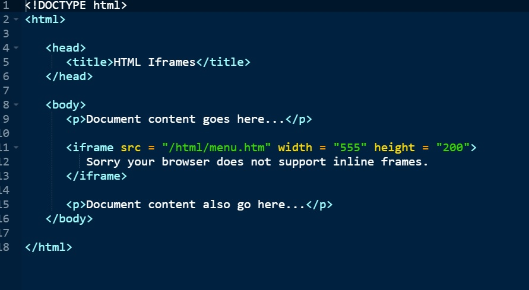
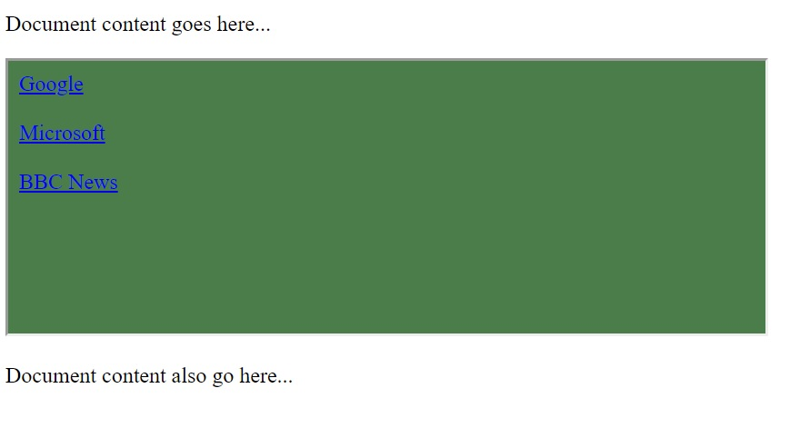

HTML-Iframe
You can define an inline frame with HTML tag iframe. The iframe tag is not somehow related to frameset tag, instead, it can appear anywhere in your document. The iframe tag defines a rectangular region within the document in which the browser can display a separate document, including scrollbars and borders. An inline frame is used to embed another document within the current HTML document.
The src attribute is used to specify the URL of the document that occupies the inline frame.
EXAMPLE:-
To Show how to use the iframe:-

OUTPUT:-

The Iframe Tag Attributes
Following are the important attributes of IFrame tag −
| Sr.No | Attribute & Description |
|---|---|
| 1 |
src This attribute is used to give the file name that should be loaded in the frame. Its value can be any URL. For example, src = "/html/top_frame.htm" will load an HTML file available in html directory. |
| 2 |
name This attribute allows you to give a name to a frame. It is used to indicate which frame a document should be loaded into. This is especially important when you want to create links in one frame that load pages into an another frame, in which case the second frame needs a name to identify itself as the target of the link. |
| 3 |
frameborder This attribute specifies whether or not the borders of that frame are shown; it overrides the value given in the frameborder attribute on the frameset tag if one is given, and this can take values either 1 (yes) or 0 (no). |
| 4 |
marginwidth This attribute allows you to specify the width of the space between the left and right of the frame's borders and the frame's content. The value is given in pixels. For example marginwidth = "10". |
| 5 |
marginheight This attribute allows you to specify the height of the space between the top and bottom of the frame's borders and its contents. The value is given in pixels. For example marginheight = "10". |